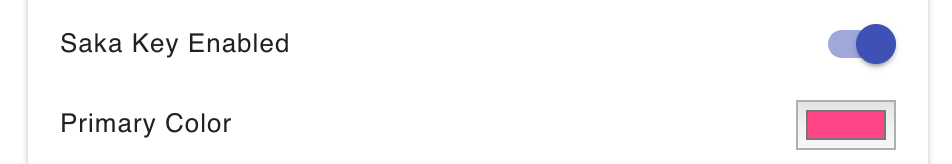

Software Architecture
Warning: Details are glossed over and Saka Key is still a young project with lots of room to grow and change. Refer to the source code for definitive answers.
Components
Saka Key comprises:
- a client loaded into every frame of every page
- a persistent background page
- an options page for user-specified settings
Client
Saka Key's client is a state machine in which the states are Saka Key's various modes. At any given time, exactly one mode is active. Each mode defines handlers for events (like keypresses, clicks, and messages) that
- Perform an action (like scrolling or switching tabs) and
- Return the next active mode.
A Saka Key "client" is loaded into every frame of every page. This client comprises:
- The infrastructure needed to manage and switch between modes (in
src/client) The set of modes enumerated below that determine how to handle user input (in
src/modes)- Disabled - the default start/disabled state
- Text - the state that is active when a text input is focused
- Command - allows entering keyboard commands for things like scrolling and switching tabs
- Pass - forwards all events to the page so that you can use a page's built-in keyboard shortcuts
- Hints - the state that is enabled when the user is selecting link hints
Mode changes are triggered ONLY by:
- DOM events - e.g. clicking a text input will cause a focus event to be dispatched. The client will intercept this focus event, and forward it to 'Command' mode's handler for focus events, which returns 'Text' mode.
- Extension messages - e.g. a client might receive a message to enter 'Hints' mode and render the hints in its frame
A client mode is an object with the following properties, all of which are optional.
interface Client {
// called when mode is entered, passed event that triggered mode change
onEnter?: (event: Event) => void,
// called when mode is exited, passed event that triggered mode change
onExit?: (event: Event) => void,
// called on all existing modes (not just the active mode) when an option is changed
onOptionsChange?: ({ [key: string]: any }) => void,
// DOM event handler that return the next mode
keydown?: (event: KeyboardEvent) => string,
keypress?: (event: KeyboardEvent) => string,
keyup?: (event: KeyboardEvent) => string,
blur?: (event: FocusEvent) => string,
focus?: (event: FocusEvent) => string,
click?: (event: MouseEvent) => string,
mousedown?: (event: MouseEvent) => string,
// Async message callbacks that return either
// 1. the Mosi get() value https://github.com/eejdoowad/mosi or
// 2. an object containg the nextMode and the Mosi get() value
messages?: {
[key: string]: async (arg: any, src: number) => any | {
nextMode: string,
value: any
}
}
}
Each mode provides custom definitions for these properties. If a property is omitted, the following default implementation is used:
const defaultModeObject = {
onEnter: () => {},
onExit: () => {},
onSettingsChange: () => {},
keydown: () => 'Same',
keypress: () => 'Same',
keyup: () => 'Same',
blur: () => 'Same',
focus: () => 'Same',
click: () => 'Same',
mousedown: () => 'Same',
messages: {}
};
The messages property is an object containing callback that are executed when messages are received. Messages may be sent by
- the background page
- a client in another frame on the same page,
- the receiver to itself
- a client on a completely different tab.
Each callback takes two arguments: a user-specified argument and a sender id. The callback returns the next mode, or can return a value and the next mode by returning an object of the form { nextMode, value }. Saka Key relies on the Mosi messaging library.
Background
Each mode may include a persistent component that lives in the background page that is shared by all clients of all tabs. This background component is useful for:
- Communicating between frames of a page
- Performing privileged actions that can't occur in content scripts
- Storing data that should be persisted in memory
The background mode component is an object of the form:
interface Background {
// called when the user updates an option, passes the background Options object
onOptionsChange?: ({ [key: string]: any }) => {},
// contains message callbacks, returns the mosi get() value
// https://github.com/eejdoowad/mosi
messages?: {
[key: string]: async (arg: any, src: number) => any
}
};
Each mode provides custom definitions for these properties. If a property is omitted, the following default implementation is used:
const defaultModeObject = {
onOptionsChange: () => {},
messages: {}
};
Options
Saka Key is engineered to make adding new functionality as easy as possible. Developers don't have to write code to get user configurable options! Just define what options are available with JSON and Saka Key automatically gets you: rendering on the options page, integration with profiles, importing, and resetting.
Within the options directory are subdirectories corresponding to options categories. Currently, these subdirectories are named 'General', 'Keybindings', and 'Appearance.' Within each subdirectory is a file named config.json. This JSON file contains an array of options. Each option has a type (e.g. switch, checkbox, textarea), a label, and a key.
"options": [
{
"type": "switch",
"label": "Saka Key Enabled",
"key": "enabled"
},
{
"type": "color",
"label": "Primary Color",
"key": "primaryColor"
}
]
These options are used to generate a GUI on the options page.

Each subdirectory also contains a file named 'index.js'. This file defines a transform function that takes the user-defined options and per-category configs and returns the options reported to the background page and clients, and an error message for each option with an invalid value.
The outputs of the transform function of each category are merged. The merged backgroundOptions object is forwarded to the background page and passed to the onOptionsChange() function of each mode's background component.
Similarly, the merged clientOptions object is forwarded to every open Saka Key client and passed to the onOptionsChange() function of each mode's client component.
The merged errors object is used by the options page to notify user's of errors in the options.
Each subdirectory also contains a file named 'default.json', which contains default option for each key.
"options": {
"enabled": true,
"primaryColor": "#ff4488"
}
Example Flow
User loads a new page by clicking a link
The page begins to load. This page only has a single top level frame
A content script bootstrapper in the frame sends a message to the background page, requesting the full client
The background page gets the messge, then dynamically loads the full client into the frame
The client initializes its full messaging subsystem, calls setup routines, and sets the start state to Disabled.
The client sends a message to the background page requesting user-defined settings
The background page receives the request, examines the clients url and determines the appropriate settings to forward to the client. The settings sent to the client are calculated using the user-defined settings specified on the options page, and are cached in the background page's memory.
The client receives the settings, and calls every mode's onSettingsChange callback.
Mode Disabled observes the 'enabled' setting is true, and changes the mode to Command.
The user presses 'j' to scroll down. Command mode knows that 'j' is for scrolling down because all keybindings were specified in the settings passed to its onSettingsChange callback.
The user presses 'f'. This results in a transition to Hints mode. The user enters 'a' then 'd', which activates an html text input.
The focusin event triggers a mode change to Text mode.
The user types their name in, then hits tab to exit the text input.
The focusout event triggers a mode change to Command mode.
The user presses 'r' to switch to the next tab.
The next tab contains an independent Saka Key client that is currently in Command mode.
The user presses 'x' to close the tab.
The user returns to the original tab, which is still in Command Mode.
The user presses 'x' to close the tab.
Finito.